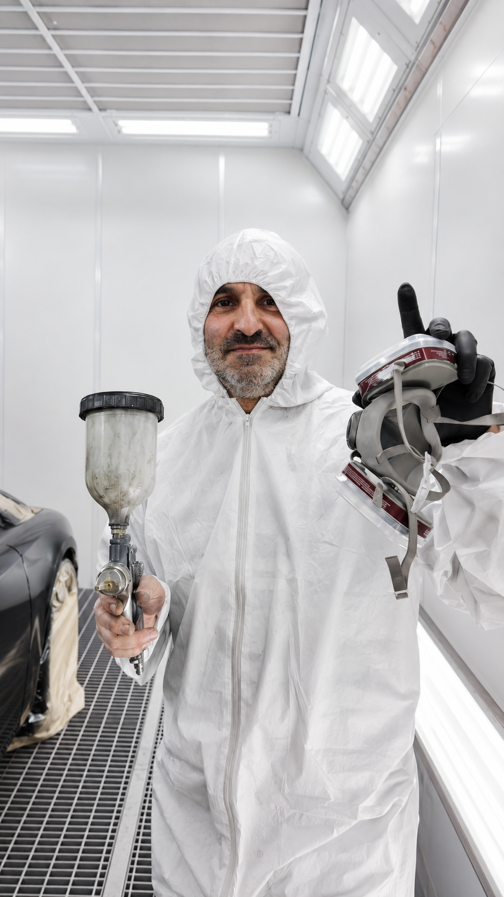

Dokładność
Dokładne przygotowanie elementu jest podstawą dobrego efektu lakierniczego.

Agil Auto Serwis
Nasz warsztat
Agil Auto Serwis to warsztat blacharsko-lakierniczy w Mościskach, w okolicach Warszawy. Choć sam warsztat działa w nowej lokalizacji, praca opiera się na ponad 20 latach doświadczenia w lakiernictwie i naprawach blacharskich.
Stawiamy na dokładność, spokojne podejście do klienta i uczciwą ocenę zakresu pracy. Najpierw oglądamy samochód, wyjaśniamy możliwe rozwiązania, a dopiero później ustalamy dalsze kroki.

Doświadczenie
Za pracą Agil Auto Serwis stoi doświadczony lakiernik, który od lat zajmuje się przygotowaniem elementów, lakierowaniem, naprawami blacharskimi, usuwaniem rdzy i polerowaniem lakieru. Każde auto traktowane jest indywidualnie, bez pośpiechu i bez zbędnego naciągania klienta na niepotrzebne prace.
Nasze podejście
Dokładne przygotowanie elementu jest podstawą dobrego efektu lakierniczego.
Najpierw oglądamy auto i spokojnie wyjaśniamy, jaki zakres pracy jest potrzebny.
Każdy samochód i każde uszkodzenie oceniamy osobno.
Nie proponujemy niepotrzebnych prac. Skupiamy się na realnym problemie auta.
Wstępna wycena
Skontaktuj się z nami telefonicznie lub wyślij zdjęcia auta na WhatsApp. Sprawdzimy, jaki zakres pracy może być potrzebny.